普通人的烦恼，是自己的注意力被品牌全天候 24 小时加 360 度轰炸。品牌的烦恼，是投放的钱越烧越狠，得到的用户时间却越来越少，为了 GMV 抓掉半手的头发。
为什么越来越多洗脑广告每天强暴我们的耳朵，就是因为管用。用户印象?谈这个太奢侈了。
你能获取的用户时间越来越少，就越会焦虑于每 1s 是不是都能榨干用户注意力的价值，想裂变想变现，想喘一口气。
假如你能获取到更多的用户时间呢?
时间多了，是不是就能放慢脚步，反思用户对我们品牌的印象?印象好坏会影响用户心智，用户心智会决定长期复购，复购能反向强化品牌忠诚度，这才是决定长期价值的关键。
如何获取更多用户时间的同时，传递好的品牌形象?游戏化或许是个最优解。
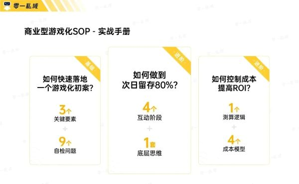
跟着我们的思路，你可以在这里学会养成类小程序游戏从0到1的搭建策略。从基础流程模型，到高留存的节点设计，再到整体 ROI 提升，实现为商城高效输送流量，这里都有。0%的14日留存、低于0.15元的平均用户留存成本，你也能复制。
2010-15年期间，寻梦游戏通过多个爆款页游与手游，变着花样把东南亚市场轰了下来。
即便是人均收入不够看的第三世界国家，也能够被洞察人性的游戏攻陷，攫取巨额收益。
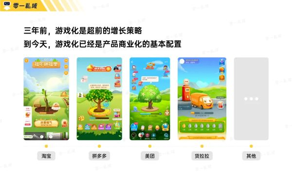
2016年，从寻梦游戏中内部孵化出来的拼多多，将拼好货时期积累的电商经验，与骨子里的游戏基因进行杂交，串起了“多乐趣”与“多实惠”。出色的游戏设计与机制，换来了惊人的用户黏性和活跃度。
商业逻辑本质是流量的漏斗，前端的水多了，流向后端只是数学概率上的问题。拼多多的增长率是这套逻辑的印证。
游戏化拿着鞭子追在每个竞争对手的屁股后边，驱使平台与品牌迭代。盒马小镇、高德小桥、美团小果、蚂蚁庄园涌进大家的眼球里，「产品游戏化」成为了趋势，Gamfication 一夜间成为了产品经理的必修课。
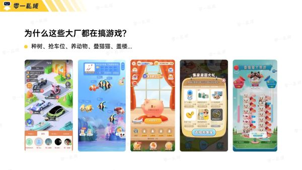
在平台app之外，小程序也焕发了18年之后的第二春，涌现了各类破圈案例：
肯德基「坦克大战吃豆人小蜜蜂3合1」小游戏
大于 350s 的停留时间，近 20% 的主动分享率，132万总发券量
全棉时代「种棉花」小游戏
超 70% 的 14 日留存，30% 的用户主动分享率，500%的裂变回流率，单个用户成本小于0.15元
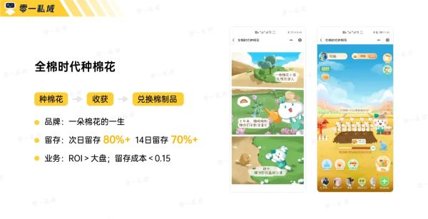
作为我们的标杆案例，全棉时代“种棉花”的成功绝非偶然。背后同一套底层逻辑在其他项目也实现了高效复用，包括但不限于京东金融、每日优鲜、博时基金等头部客户。
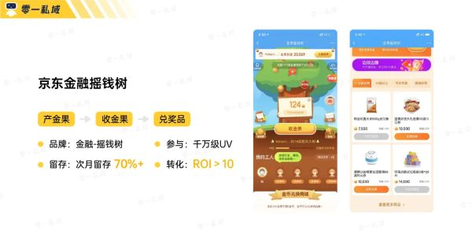
小游戏会是下一个阶段，品牌私域必须提前布局、最具性价比的营销策略。
可以一站式解决裂变拉新、品牌认知、留存转化等问题，同时能为背后的小程序商城进行源源不断的流量输送。
我们去年为全棉时代落地的「种棉花」小游戏，至今仍然是其私域体系内的关键一环。
谈到游戏化设计，「创新好玩」会是大家的第一反应。但是上来就谈创新，难免要跑偏。
一套好的基本框架，才能让游戏在玩法上充满惊喜，在业务上降本提效。
这里我们准备了 3 个问题，大家可以在项目开始前，认真、仔细、坦诚的进行思考。
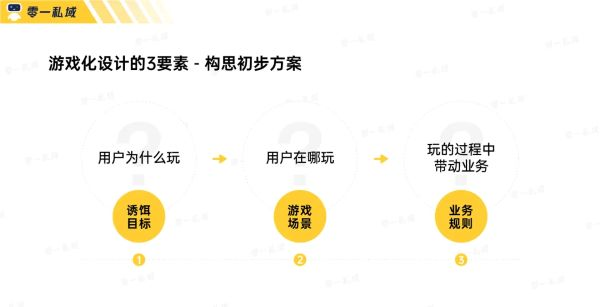
1)问题1：关于诱饵的3大要素
大家玩小程序游戏，除了图他好玩，就是图他能有奖品。
奖品选的好不好，直接决定用户留存的动机够不够。好的奖品能让用户对自己「为了什么而玩」一清二楚。
怎么做到?靠这 3 点：
诱饵价值上，你的诱饵实际成本和用户感觉到的价格，差异大不大?
比如你高高兴兴地准备了一堆很贵的商品，结果用户打开觉得「就这也值这个价?店大欺客?」感觉不到价值，他就决不会搭理你。
诱饵尽可能避免用爆款产品，捡了芝麻丢了西瓜。
用爆品作为诱饵，游戏的整体数据是上去了，但是影响了整体大盘的销售数据，最后 BI 一拉表一算，整体的投产比反而下降了。
诱饵选品细节上，反复测试，才能拿到最优结果。
这是问题 1 和 2 的结合延伸，同样是20块的普通商品，能跑出来的效益是完全不同的，用户感知是其中一个因素，季节性、时间性的需求差异也是一个因素。根据不同行业不同品类，你有无数的影响因素要去思考。
2)问题2：关于用户的游戏场景
游戏场景关乎第一印象，第一印象决定用户体验。
如果界面不美观，用户直接就点右上角走了;如果界面设计布局不合理(太简单 / 太难)，用户玩起来总觉得哪里不舒服，后续裂变和变现也会出问题。
怎么理解游戏场景呢?
场景设计上，要直观，要让别人一目了然。
拿种棉花来说，播种、浇水、种植、棉花成熟得棉品，简单直接。如果变成收棉花、加工棉花、快递物流，创意多了，用户理解也慢了。专业说法就是用户理解成本的增加，必然导致用户参与度的下降。
要让画面和动效足够有趣，足够新鲜。
新鲜感是第一驱动力。即便玩法与其他游戏大差不差，你也可以准备差异化的小设计让用户眼前一亮。
让你的游戏和你的品牌产生挂钩，让人能产生联想。
传递你的品牌价值是很重要的。譬如之前 Vans 做的滑板小游戏就完美传递了他们的街头滑板文化，全棉时代的就可以通过游戏展示种棉花本身的环保价值。
3)问题3：关于游戏的商业价值
用户路径设计、任务体系，怎么样能够和用户「不伤害体验地谈钱」?我们会在后文详细展开，大致有以下几点：
1. 游戏的任务规则，是否与业务目标有关联性?
2. 游戏的价值产出，要设立什么阶段性目标?
3. 游戏的任务设计，是否处于合理难度?
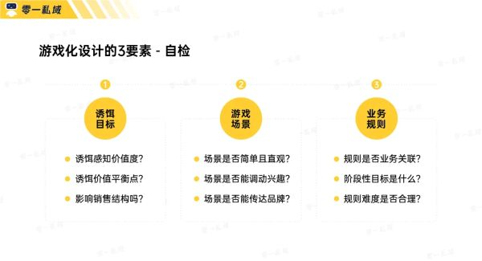
注意，这一章节只是给了你一个「指南针」。方向不出错，并不能保证做出用户会玩、爱玩、愿意掏钱的游戏，我们还需要回到起点，从用户路径开始，继续扣一遍细节。
第 3 次操盘种植水果的小游戏项目时，我们陷入了「知识的诅咒」。
拿着一套好的底层框架，误以为对每一个环节都有充分把握，导致上线当天数据直接暴毙，反馈到数据上的结果是用户给树浇 5 次水，就会扔掉水壶撒腿跑路。
当时通过调研收获到的一句用户反馈，到今天还贴在我们办公室上：
“你就让我浇了几次水，就想让我下单、邀请好友干嘛干嘛的，我还指不定能拿到你们的奖品呢，凭啥?”
想要驱动用户做高心理门槛的行为，比如转发、转化，一定需要有充分的信任基础和依赖，才能够有效激发他们，让他们愿意更深度参与。
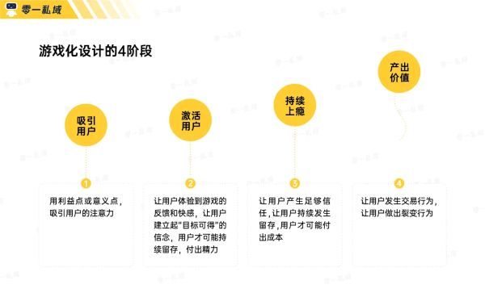
做个类比，大家都有追求爱慕对象的经历。你如果刚认识 Ta 不久，冷不丁就上去和别人说："今天要不要来咱家吃个饭，咱爸咱妈都在。" Ta可能一个大嘴巴子就甩你脸上了，这不臭流氓吗?
如何避免挨巴掌?不如我们从头来过，将认识用户那一刻作为起点，将分享转化作为终点，把流程走一遍，走完所有关键节点。
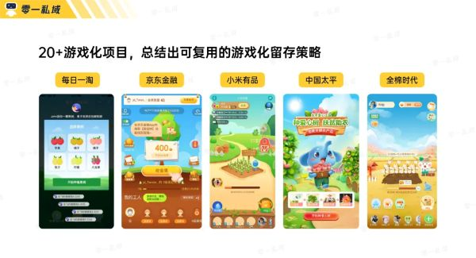
1)仔细把控诱饵
在用户点击进来这个游戏时，一定要当作初次见面，假定用户对我们的认知是 0 。
他不知道游戏是做什么的，不认识你的品牌，不确定自己能否最终领到这个产品，他不相信你。
针对这种心理，我们最直接的策略，就是从选品出发，让他对免费领取这款产品有强烈的渴望，愿意接受引导，不能贵，更不能看起来廉价但很贵。
为什么再三强调到这点?之前某款游戏上线前做测试，我曾经分享到家庭群内时，我妈吐槽"你们这里这个东西居然要这么贵吗?骗人吧?"，而不是"你们下血本了啊!"
选品的包装会直接决定价值感知，从而直接影响用户的参与度。流量漏斗的最上方永远不能出问题，一出问题就是大问题。
那么开头只需要准备诱饵就够了吗?
2)构建精神意义
有了基础利益点，我们一定要考虑「意义感」，一些精神上的驱动。
这是最重要的部分，也是最易被忘记的部分。以种棉花举例，大家知道棉花收割、做成棉制品、加工成织物再售卖是纯粹的商业行为。
但多数人不知道种棉花本身的环保意义，一片荒漠只要种上棉花，一定年份过去，土地会再一次「活」过来，回到可耕种的模样。
当时我们就将这个小故事做到了开篇，传递品牌理念并为用户构建精神上的意义感。
故事增加用户行为步骤次数，会不会影响完成率?大家可能普遍对此有所顾忌。事实上是这个故事的完成率高达 99 %，几乎所有人都会持续跟着故事的交互进入游戏页面，开始游戏。
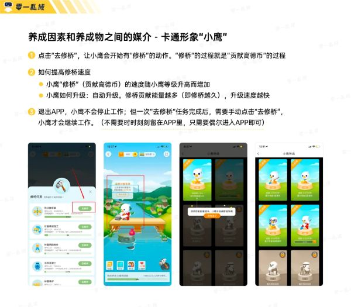
(案例拆解：构建意义还可以通过让用户喜欢上角色)
我们和很多用户沟通过，普遍给予的反馈都是"觉得这个故事很暖心和可爱"、"有点被治愈"。
不要低估初次见面的印象，好的印象会在心里留下印记，带到后续的每一次消费，也就是我们说的品牌认知，真正实现提高品牌价值。
3)做好出色引导
来到游戏界面，用户知道了你是谁，但不知道怎么玩，不知道要做什么，蒙圈，随时可能离去。
我们这时需要持续引导他进行界面上的点击，在点击之后给足反馈。数字增加，动效惊人，让用户绝不移开视线，他就会被多巴胺推着走。
出色设计的引导，基本上完成率可以在95%以上。
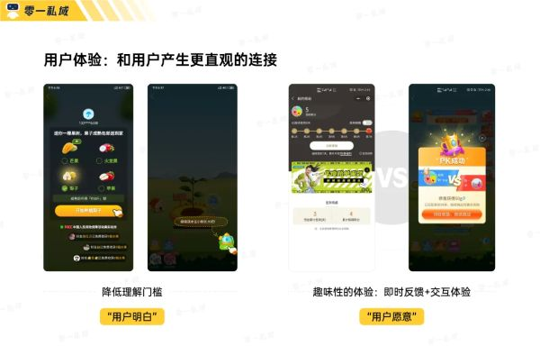
这个环节争议很多，比如：引导做的重，到底会不会让用户觉得烦?
我的答案是：用户肯定觉得烦，但是他不会排斥。
人厌恶没有引导时的不知所措，偏爱有明确的方向引导时的踏实感。
而当他不断被我们推着走时，随着精力和时间(沉没成本)的投入，他会不自觉对产品产生信赖感。"既然都投入了这么多时间，就继续玩下去吧。"《影响力》以及众多社会心理学类书中也常提到，人是趋向于言行一致的。
而这仅仅只是开始。
4)关键节点的致胜策略
之前在做另一款畜牧游戏时，出现过用户在第 10 次喂饲料后的流失率会飙到 40% 的情况。游戏本身没有出现任何异常，页面没有BUG。
在用户调研(现在你发现了，游戏可能比任何活动形式都看重用户实际反馈)时，我们听到了一句话：
"我觉得一直浇水好累啊。"
只有恰到好处的新鲜感，才能让用户再次打起精神。
没有人喜欢一成不变的事情。如果游戏开始机械性的重复喂饲料/浇水，倦怠感会瞬间出现，把用户的情绪摔进谷底。
一方面没有特殊反馈，没有趣味性，玩着没意思意思;另一方面是他会开始琢磨这个棉品自己猴年马月才能拿到。
我不能够白天醒着坐着时要打工，休息躺着时还要在游戏里打工吧?
面对这类关键节点，最有效的策略设计就是引入崭新的剧情点和游戏机制，推动用户进入下一个阶段。
譬如"你的小牛生病了"、"你的果树上有虫子"等，引导用户额外进行 5 次点击(浇水、喂养、除虫)后，才能够化解游戏内危机。
加了这个剧情后，畜牧游戏第 10 次的流失率骤降到 5%。
这个策略会一直用在游戏后续的每个关键环节。
譬如第3阶段，我们会从视觉上直接变换新的场景，譬如果园从黄土地变成了一片绿色，小牛生出了一窝牛崽。
进一步的第4阶段，我们会引入新的玩法设计，譬如“收集雨水”、“接住空运饲料”，可以让你培育的农作物 / 动物更快速生长，投喂一次等于过往的两次。
只要为玩家准备了一次新的剧情玩法，他会本能地相信并期待下一个阶段有更好玩的东西等着。
很多时候我们说多巴胺是获得奖励后的快感，但根据最新的研究，多巴胺本质上是人在「产生期待」并且「希望获得新的奖励」时才分泌的。
当你被新鲜且正向反馈的东西刺激后，你就会期待下一次会出现更强烈的刺激，也是著名心理学实验「斯金纳箱」背后的生物学原理。
除了关键节点，小细节设计也不能少。
剧情之外，我们会偶尔模仿养殖场工人的预期，为用户准备一封信，比如我是在xxx养猪的李奶奶，今年已经71岁了，这是我们山村的关键产业，很感谢你和我一起在这里继续坚守。这封信送给你，还有20包饲料。
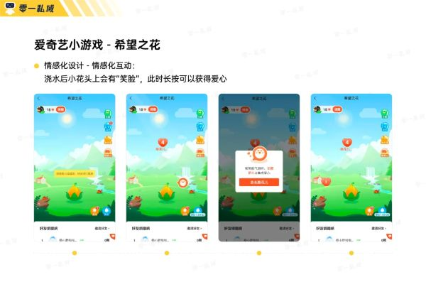
(案例拆解：小设计策略)
有温度的小设计会让用户和游戏以及品牌建立了更深层的、基于内容的情感链接，不再停留于纯粹利益的互换。
持续的时间投入与奖励获取，又会进一步强化他对游戏的好感以及对平台的熟悉程度，形成了正向循环。
但是做了这么多设计，其实仅仅是用户在游戏里的第一天，第二天怎么办?
5)让用户第二天还来的留存点设计
怎么让用户第二天还想来见你?要让他们心里感觉到「痒」。
我们的设计方案是：如果你把第一天的饲料全部用完，你会停留在第 4 阶段，再多一次行为就可以升级进入第5个阶段。这时他有 3 个选择：
a 下单购买换取
b 邀请好友游玩换取水滴
c 明天再来
根据大量项目实操数据反馈，平均 76% 以上的用户会选择c，因为这时他还不愿意买单。
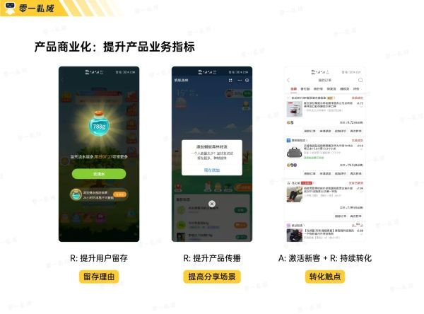
在第二天之后会有一个更麻烦的问题：虽然大家收藏添加了小程序，但基本没有人形成了每天打开玩的习惯，下拉到小程序界面，点开我的小程序，还要找一会，这个路径太长了。
怎么办?让用户「主动订阅模板消息」。
每天登陆能领取10g化肥，下一单领100g，拉一个好友领100g。但还有一个办法能领100g化肥，就是马上订阅我的模板消息。
用户不会抵触，用户只会觉得自己赚大发了，啥都没做就获取到了这么大的奖励。
根据大量数据反馈，80%以上的用户都会选择完成这个任务，每天早上8点他会收到模板消息触达，主动订阅的触达打开率早上基本都能到 60% - 70%左右。
为什么需要主动订阅，而不能强制用户订阅?
背后仍然是用户心理的差异，用户主动订阅，是因为「我觉得占了便宜」。
如果是被动订阅，用户反而会觉得「我为什么每天都被你的垃圾轰炸?」而这种心态影响会直接反馈在触达打开率。
同一套用户心理放在其他地方也一样有效。
我们为品牌做私域社群时，同样是福利群，让用户被动得知社群的安排，不如提前准备一张图告知他福利的排期，让他会在固定时间点主动打开社群，养成社群打开的习惯，这样的社群我们也不会担心被折叠。
但是这只能解决触达上的问题。
6)刚刚好的难度
我能保证用户第二天还会打开游戏，但是打开后还玩不玩，本质上取决于游戏过程中的体验是否愉快。
愉悦的体验，除了游戏性本身，更重要的是用户任务的梯度。
如果每次打开游戏，上来就是不可能完成的任务，打开游戏对用户而言就会变成一件很困难的事情。
我们会严格把控难度梯度，用户一定是简单任务先领取了大量的道具，再逐步到困难任务，这时用户的接受度反而是比较高的，可做可不做，闲着没事就试试。
没啥心理压力是小程序游戏永远的设计核心。
7)明确的小目标
来到最后一个问题：用户觉得进度条太长了，要玩20-30天才能完成，坚持不下去，太累了。
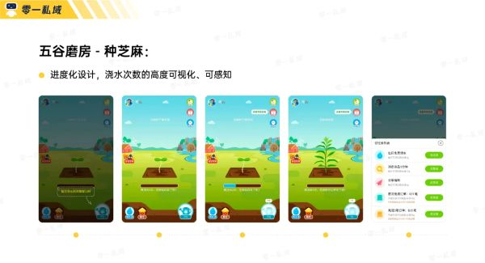
(案例拆解：进度直观化策略)
我们能做什么?帮用户完成目标拆解。
比如，每3次浇水，我们就设计一个宝箱让用户开启，开启下一个宝箱就需要5次浇水，可以2小时后来。
将用户的注意力从浇水进度转移到了宝箱，不再纠结于进度条，而是每天浇满某个次数就能获取小奖励，把控用户游戏中的体验。
为什么前面一天就让用户升级到第4阶段?就是要通过大量激励与飞速的升级，让他们意识到「我是可以达到目标的」、「我是可以得到最终奖品的」。
人不会轻易为了不太可能得到的东西付出努力。
比如高考，假如我是考大专的水平，非要临时定个北大，那我每天除了对着北大的标语发呆，其实啥也干不了。为啥?距离我太远了啊，不是努力能解决的问题啊。
你游戏里一开始的奖品再好、我再喜欢，我得不到，那跟我就无关。
人的心理会有这种防御机制，以避免自己预期落空的失望感。我们一定要给用户目标一种渐进感，才能让用户不断地往前走。
8)可玩性总结
大量篇幅说完了具体「术」层面的策略，背后的「道」其实是一套高度抽象提炼过的认知框架，也在这里分享给大家，来自Yu-kai Chou老师《游戏化实战》书内的「八角行为分析模型」。
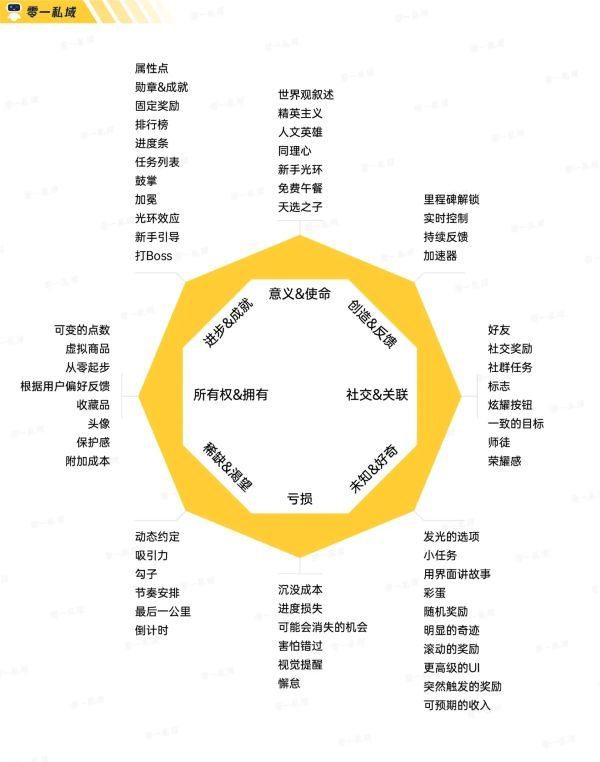
我们设计的每一个环节、每一个细节，其实并未超出这个框架。品牌故事构建意义与使命、游戏场景用界面讲故事、完成世界观叙述、实时与持续都反馈推动用户前行、最后一公里叠加厌恶损失确保用户第二天必然再来......
这八大核心驱动力，足以引导我们设计出完整、符合用户偏好的小游戏，让用户愿意选择游戏、进入游戏、心甘情愿的按着我们的指引前进。在此也强烈推荐大家去阅读《游戏化实战》，结合实际身边案例拆解。
走完这一套流程的用户，发生交易、分享、拉新裂变等行为都是非常自然的事情了，过程中的许多任务也已经为商城导入了不少流量。
我们分析了过往所有游戏项目数据，平均有 30% 的用户会至少完成1次拉新，拉到3-5个用户访问页面，其中1-2个为全新用户，并且新用户参与率普遍较高。
产出价值的环节总是放到最后的，绝不要上来就和用户谈钱谈拉新。
但是千万不能迷信顶层设计，而是坚持小步快跑。
每个品牌、品类、用户人群的差异，对应下来都是大量的迭代细节，需要我们不断测试和迭代，小步快跑、持续推敲用户心理以及做调研，才能够做到能吸引用户的游戏。
于是来到大家最关心的问题：做到了上面的所有后，我要怎么确保他能赚钱?怎么控制成本?怎么提高ROI?
第 1 步：明确预期
准备一套数值模型来进行成本测算，控制整体营销成本。我作为品牌方，今天我给出的这份棉制品，我希望换来什么?我的预期是什么?
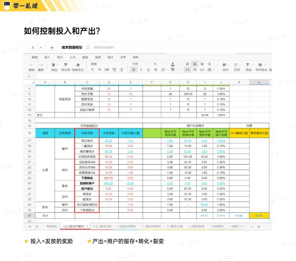
明确我们预期的下限，接受纯羊毛党的存在。如果他不裂变不下单，那我就需要他来玩满 30 天才能获取，我20块的预期就是换来了30天的留存与活跃数据。
明确我们预期的上限，服务好每天都下单的用户。这类高净值用户，我最快能让他几天快速拿到20块的最终奖品?5天还是10天?这是我们需要推出的上限值。
一个各方面都在及格线以上的游戏产品，纯羊毛党和金主都是占比很少的，都在10%的范围波动徘徊，服从数学上的正态分布。
全部用户都玩满 30 天亏大发的情况不会有，相对的也要降低用户高频付费的预期。
第2步：目标拆解
确定了数值的上限与下限后，就需要根据总体营销成本进行拆解。我们的业务数据目标是什么，成本是多少，明确好数据的边界范围。
有了成本线，我们才可以确定奖励的货币价值。
1块钱成本是多少游戏饲料?我每天最多能给单个用户发多少饲料?500g?1000g?哪些任务是当前的重心?访问?浏览?转化?分享?
根据行为重心，设置任务的奖励数量。
倒推用户的成长速度，进一步明确出用户完成天数的数值上限与下限，同时定义用户每一个行为步骤的真实价值。
注意，我们的价值与用户的价值不一定相同。
比如用户觉得分享最重最难，做了后奖励感觉不及预期，需要及时调整。
第3步：黑产防范
这是大家必然会遇到、但是完全不必担心的问题。
新活动是一定会有大量的羊毛党进来攻击的，他们会试探机制是否有缺陷。在我们每次上线活动后，基本无一例外会遇到几十上百万的活跃冲进来。
如果前两步的数值模型与规则制定好后，规划好用户单日任务、道具、用户行为上限，包括邀请拉新的上限、单个用户能被邀请的上限，所有涉及到成本支出的地方，我们都进行充分限制。
确保机刷党只能在规则内蹦跶，他是跳不出掌心的。
第4步：做好用户分层
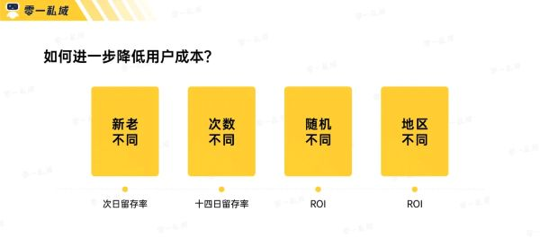
用户分层决定了你的每一块钱是否用在了刀刃上。
之前我们某场全国范围的活动，人群涉及 1-5线城市人群。在实际数据表现中，我们发现激活一线城市的人需要付出 5 块钱成本，激活3线往后的只需要 1 块钱，不同人群的驱动成本有明显差异，就不需要花 5 块解决1块的问题。
面对有邀请拉新能力特别强的用户，我完全可以给到他10块甚至更多，让他有更大的意愿持续推进。
同时还需设置活动奖励的随机性，确保一定有 10%的用户可以轻易领取到奖励，剩余的90%就需要付出一些精力了，确保成本可摊平。
为什么这么做?一年多前拼多多有一场拉新活动，完成拉新可以领取 100 块可提现的红包。
当时在玩我朋友圈里引爆的原因全靠一个朋友的成功提款，虽然后续好友群内其余10多个人中成功案例为0，但口口相传的传播效果总是远大于品牌的直接推广，未参与的人会因为身边圈子和属性近似的人成功而产生极大的信心参与其中。
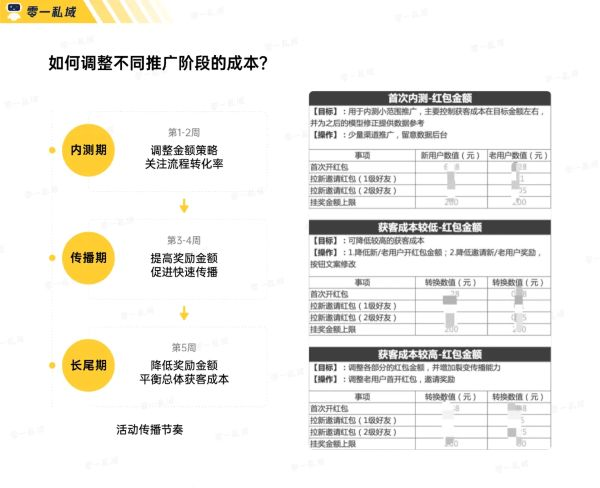
这种浪潮式的宣发策略非常有用，可以快速引爆活动。
活动上线初期获取奖励的难度一定是很低的，目的是引爆用户传播，在前 10 天投入大量成本给用户奖励，然后在 10-30 天逐步降低概率，确保成本始终在中间值线上下浮动，把流量一波一波推起来。
但是这招千万不能一直用。如果要确保游戏的口碑以及可持续的运营，宣发期后的规则一定得回归到公平公正，部分概率回归最初的成本测算逻辑。
上述的具体策略，我们准备了一张过往的逻辑流程图分享给你。
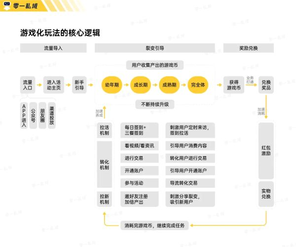
具体策略之外，我们还有一些希望分享出来的认知来辅助你的理解。
分享场景变化的魔力
砍一刀会让人觉得你贪小便宜，但是喊人浇水是没有任何心理门槛的。
艾略特阿伦森曾在《社会性动物》中提到："环境中的社会暗示告诉我们其他人的感觉、想法或行为，而这些又会反过来影响我们的感觉、想法和行为。"
为什么分销、砍单、拼团等直接与利益挂钩的裂变策略，在面向部分人群圈子时失效?
就是因为分享带来的利益不能抚平分享者自身的行动门槛，无法对冲掉可能造成的「社会形象/印象变差」。
「社交形象价值」很多时候远大于「金钱价值」。
最开始拼多多的「砍一刀」，我爸是不玩的。他是互联网化程度比较低的人群，发到一个群里，可能能有十多刀出现，但是因为这一刀「太便宜了」，很多时候就值几分钱，他不好意思，他担心别人觉得他是爱贪小便宜的人。
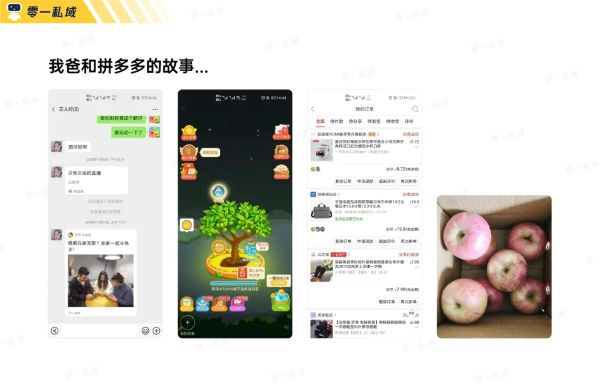
后来他的同事把游戏链接发到社群内，他开始玩游戏后，家庭群里平均每 50 条新消息里，至少有 30 个是游戏链接。后来因为拉不到人帮忙又想要水滴，2天内下了 20 多单。
游戏里的树种成了，他心里对拼多多认知的种子也发芽了。
同样的分享行为包装为"帮我复活"、"花快死了，帮我浇水"，分享者的心理门槛就没了。这是游戏化的魔力。
他最终获得的金钱收益可能都是节省了 1 块钱，但普通裂变是省钱，游戏却会让他觉得「好玩」，这些用户心理差异最终在数据上的体现，就是整体拉新成本的显著降低。
将功利的邀请包装成趣味性的社交互动，随着整体人们生活与消费水平提高，为了抓住更高净值用户群，这类策略对品牌来说会愈发重要。
远高于 TVC 投放的品牌传播性价比
很多人可能都对电梯广告深感厌烦，但是这些广告无论是造价还是投放都需要大量的资金投入，为什么品牌冒着负面形象的风险也要使用这个策略?
因为真实有效，他就是可以直接占有人们电梯场景中的十多秒，日复一日，让你对品牌真的形成认知与印象。
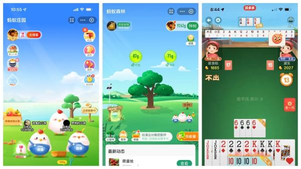
(拼多多新上线的斗地主在数值与路径设计堪称一绝)
一次巨额投入，换来10s的展示，日复一日在你脑海里累积1-2分钟的印象。
但是回想一下你在拼多多果园种过的树，支付宝里养过的鸡。你的累积投入时间是以分钟为单位，还是小时?
有了这么多的时间，如果与品牌属性结合的更好，让用户在体验过程中对品牌形成强烈的认知。
想象一下，如果有一个品牌的签到是小时候PC版大富翁的样式，你会不会每天都来看一下?你会不会马上记得他们品牌特立独行的设计?
小游戏这种形式本身是有明显上限的，他不是大型RPG，也不可能做成MOBA。
(EDG牛逼)
但我们依然可以做出用户愿意玩、又能传达品牌价值的小游戏，靠成本调控数值支撑 ROI 在预期内。每个品牌的差异会直接影响小游戏的调性和质感差异，每个小游戏需要为品牌解决的问题也不同。
为什么消费品牌需要打出爆品?他们需要通过被高频看见、消费的机会，进而带动一些低频的产品。
为什么短视频账号追求爆款破圈?一期爆款就能带动整体数据，高频被消费的内容会提升主页被看见的概率，进而提升其他视频被点击的概率，还是那个漏斗问题。
一个好的小游戏，也是高频行为，通过高频进而带动打开率较低的小程序从而提升整体转化数据。小游戏高频的互动就像化学实验中的「催化剂」：加速新用户对品牌的感知，加强老用户对品牌的忠诚与信任。
生活也像一场游戏，我们的欲望无非就是：竞争成就(战胜别人)、兴趣驱动(喜欢玩耍)、体验驱动(沉浸生活本身)，对应现实中大家的诉求同样如此。
欲望是不变的，游戏打动人心，无非就是理解你我内心真正的需求，再给我一个安全温暖的虚拟房间，让我们得以宣泄 END